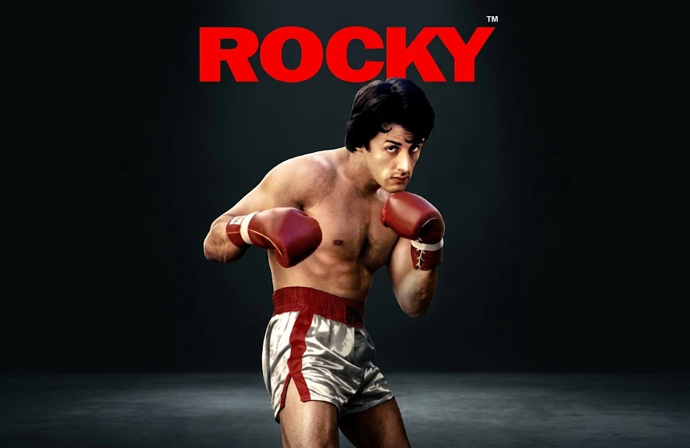

Un guion contra todo pronóstico
Sylvester Stallone escribió el guion en apenas unos días. Aunque varios estudios querían comprarlo, insistió en interpretar él mismo a Rocky, incluso cuando eso significaba rechazar ofertas mucho mayores.
El campeón del pueblo
Rocky Balboa es un boxeador desconocido de Filadelfia que recibe la oportunidad imposible de enfrentarse al campeón mundial Apollo Creed. Más que una pelea por el título, su reto es demostrar que puede resistir hasta el último asalto y encontrar dignidad en el intento. Es una historia honesta sobre perseverancia, amor y la voluntad de seguir de pie.

Ilustración“No se trata de lo fuerte que golpeas sino de lo fuerte que puedes recibir los golpes y seguir avanzando.”
Información General
Ganadora de 3 premios Óscar, incluyendo Mejor Película.
Actores principales: Sylvester Stallone, Talia Shire, Burt Young y Carl Weathers.
Escrita por Sylvester Stallone
Más allá del ring
Sylvester Stallone escribió el guion en apenas unos días. Aunque varios estudios querían comprarlo, insistió en interpretar él mismo a Rocky, incluso cuando eso significaba rechazar ofertas mucho mayores.
La banda sonora de Bill Conti convirtió “Gonna Fly Now” en un himno universal de superación. La famosa subida por las escaleras del Museo de Arte de Filadelfia sigue siendo una de las escenas más reconocibles del cine.
Recibió 10 nominaciones a los premios Óscar y ganó tres: Mejor Película, Mejor Dirección y Mejor Montaje. Su éxito transformó una producción modesta en un fenómeno internacional.
Rocky no trata simplemente de ganar una pelea. Su mensaje permanece porque redefine la victoria: levantarse, continuar y demostrarte a ti mismo hasta dónde puedes llegar.
Fuentes